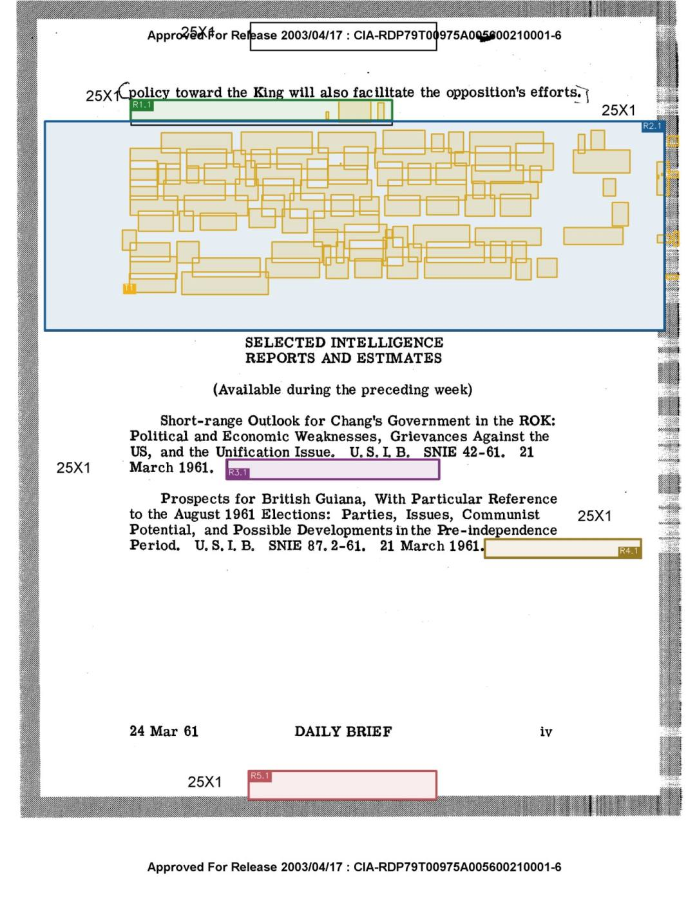
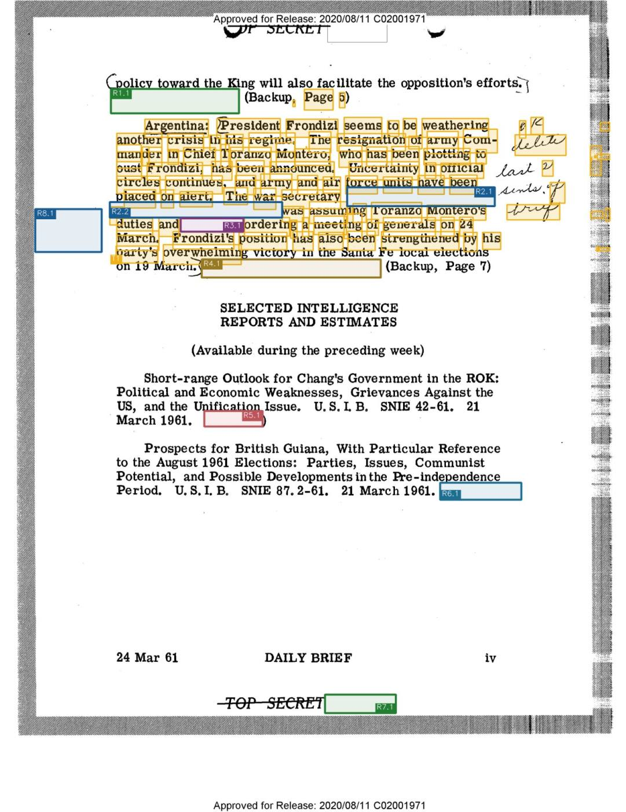

R4.1 are physical components found from one page's pixels. The detector receives no answer text or paired page.Items v4 physical-source audit
CIA-RDP79T00975A005600210001-6
Earlier page 7 is the more-redacted source; later page 8 is the less-redacted comparison. The CV detector runs independently on each page. Saved v4 text is attached only after detection.
T1 marks exact word boxes located in the later PDF text layer, then projected onto the earlier scan. These are audit annotations, not detector inputs.CV components (colors distinguish regions)full target wordspartial target wordsgeometry miss
Earlier release
More redacted - source page 7
Optimized detection + target overlay

Later release
Less redacted - source page 8
Optimized detection + target overlay

Target provenance and assignment
| Target | Saved v4 target and context | Located later-PDF text | CV coverage |
|---|---|---|---|
| T1 ASSIGNED_FULL |
[STILL REDACTED] Argentina: President Frondizi seems to be weathering another crisis in his regime. The resignation of army Commander in Chief Toranzo Montero, who has been plotting to oust Frondizi, has been announced. Uncertainty in official circles continues, and army and air force units have been placed on alert. The war secretary [STILL REDACTED] was assuming Toranzo Montero's duties and [STILL REDACTED] ordering a meeting of generals on 24 March. Frondizi's position has also been strengthened by his party's overwhelming victory in the Santa Fe local elections on 19 March. [STILL REDACTED] Before: the King will also facilitate the opposition's efforts. |
9 Page 5 /45 Argentina: Eresident Frondizi seems to be weathering a /4 another crisis in his regime. I The resignation Jof army Com- M/55,10 1 1: '£§2,m‘ man oust a Frondizi, er in Chief has T oranzo been announced. Mo ntero, who Uncertainty has been plotting in official to IV W circles continues and army and air force units have been laced on alert. ,The war secretary /0 Ll Pp bras assum ng Toranzo 1Vlontero's ////‘““7vU Z23?’ A duties and orderin g a meet‘ mg of generals on 24 March. Fr0ndizi's position has also been strengthened by his I T.-_,_,,, party's overwhelmin Saved v4 text match: 79.4% |
96.1% (99/103 words) CV components: R1.1, R2.1 Regions: R1, R2 |
Registration: PASS; inliers: 2154; median reprojection error: 0.057852. Source files: CIA-RDP79T00975A005600210001-6.pdf / cib_02001971.pdf.